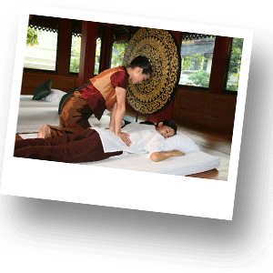
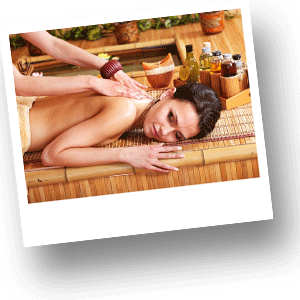
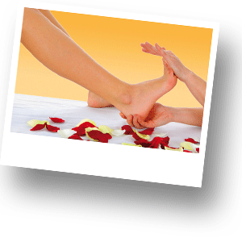
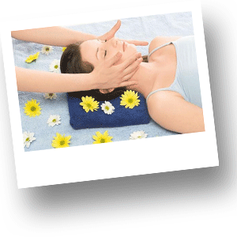
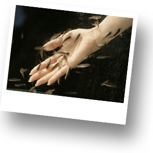

Массаж в Тайланде
В Таиланде для Вас представлены различные виды массажа за очень умеренную цену. Как правило, в Европе подобные услуги стоят в несколько раз дороже, поэтому не упустите возможности расслабиться в местных спа-салонах. Ниже мы расскажем Вам о некоторых видах массажа, которые Вам обязательно предложат в тайских массажных салонах. Более подробно остановимся на традиционном тайском массаже.
Массажные салоны можно найти на улицах Тайланда как в Бангкоке, так и в курортных местах и это будет стоить значительно дешевле, чем подобного рода услуги в гостинице. Что касается качества массажа в Тайланде, то в большинстве своем оно достаточно высокое.
Основные виды массажа в Тайланде: классический тайский массаж, боди массаж, ойл массаж, фут массаж, массаж головы, рыбий массаж

Традиционный тайкий массаж
Особое направление массажа, делающее акцент на точечное воздействие и практикуемое в Таиланде.
История тайского массажа:
Искусство классического тайского массажа формировалось под влиянием древней культуры Китая и Индии и приобрело нынешний вид благодаря долгой практике, наблюдению за природой человеческого тела, методом проб и ошибок создавая чёткую систему оздоровительной терапии. Отцом-основателем тайского массажа считают доктора Дживака - личного лекаря одного из индийских царей, правившего более двух тысяч лет назад. Тайский массаж всегда использовался в терапевтических целях совместно с тайской традиционной медициной. Античные знания передавались мастерами из поколения в поколение путём индивидуального обучения. Тысячу лет назад из-за отсутствия письменности эти знания не документировались вплоть до Сукхотайского периода. После начала тайской грамотности в 1277 году, знания мастеров тайского массажа стали документироваться вплоть до Аюттхайского периода, но полное разорение бирманцами Аюттхаи в 1765 году не оставило свидетельств записи системы массажа. Документальные свидетельства учения сохранились лишь с начала Бангкокского периода, в частности, во время правления королей Рамы III и Рамы V. Король Рама III в 1832 году основал первый университет Таиланда при монастыре Ват Пхо, который стал первым высшим учебным заведением для обучения простых граждан. На шестидесяти мраморных плитах и на стенах храма расположены изображения и диаграммы линий воздействия на тело и акупрессурных точек. Тогда же было изготовлено восемьдесят статуй, изображающих растяжки и позы из йоги, двадцать шесть из которых до сих пор находятся на территории Вата Пхо. В 1870 году король Рама V приказал собрать и заново переписать тексты по тайской традиционной медицине, тайскому массажу и йоге. Эта работа была завершена в 1906 году.
Эффект от тайского массажа:
Улучшение кровообращения, разогрев массируемой области, снятие отёчности.
Улучшение силы и эффективности работы мышц, выведение токсинов, снятие напряжения, расслабление сухожилий и улучшение их эластичности.
Стимулирование и улучшение активности нервной системы.
Расслабленное и глубокое дыхание.
Улучшение эластичности пищеварительного тракта, массаж области желудка предотвращает несварение.
Улучшение притока крови к коже, улучшение состояния кожи, разглаживание рубцов.
Противопоказания:
Жар.
Повреждение или воспаление мышц. Необходимо сделать горячий компресс, если повреждение давнее и нет покраснения, делать массаж следует весьма осторожно.
При свежем повреждения мышц при наличии покраснения и горячего на ощупь участка тела следует сделать холодный компресс, повреждённая область не массируется.
Не массируется область свежего перелома кости или при повреждении суставов.
При варикозном расширении вен эта область не массируется.
Массаж противопоказан при заразной болезни кожи. Можно делать массаж при неинфекционном поражении кожи, избегая области сыпи.
Интоксикация алкоголем или лекарствами.
При нетяжёлых болезнях сердца, диабете должны использоваться специальные меры предосторожности. Если массажируемый голоден, следует предложить ему лёгкую закуску. Если он слишком сыт, то стоит избегать определённых положений (напр. позиции лёжа на животе) и воздействия на брюшную область.

Ойл (масляный) массаж (oil massage)
Эт от вид массажа относится к релакс-массажу с элементами классического массажа. Очень приятная процедура, напрвленная на расслабление тела. Во время сеанса ойл-массажа используются ароматические масла, которые втираются в тело.

Массаж ног (foot massage)
Как видно из названия, объектом воздействия являются ноги. С ними работают как вручную, так и при помощи палочек, похожих на толстые карандаши. Различные продавливания точек на ступне, массаж икр. В завершении массажа ног, специалист массирует воротниковую зону.

Массаж головы
Отлично снимает стресс, успокаивает нервную систему, погружает в забытье от тяжелых мыслей. Снимает головную боль. Отлично расслабляет нервную систему.

Рыбий массаж
Этот вид массажа не соответствует формулировки «массаж» полном е понимании. Скорее этого своего рода рыбное СПА (fish spa). Вы опускаете ноги в емкость, где очень много маленьких рыбок и они обкусывают ороговевшие клетки кожи на ногах.Это совсем не больно. Незабываемые ощущения и достаточно щекотно.
Боди массаж (body massage)в Тайланде
Больше похож на эротический массаж . Скажем так это массаж для расслабления. Широко популярен в Паттайе. На тело клиента массажистка воздействуют руками и трением тела через слой мыльной пены. Именно этот вид массажа очень популярен у туристов, приехавших в страну в поисках острых ощущений.